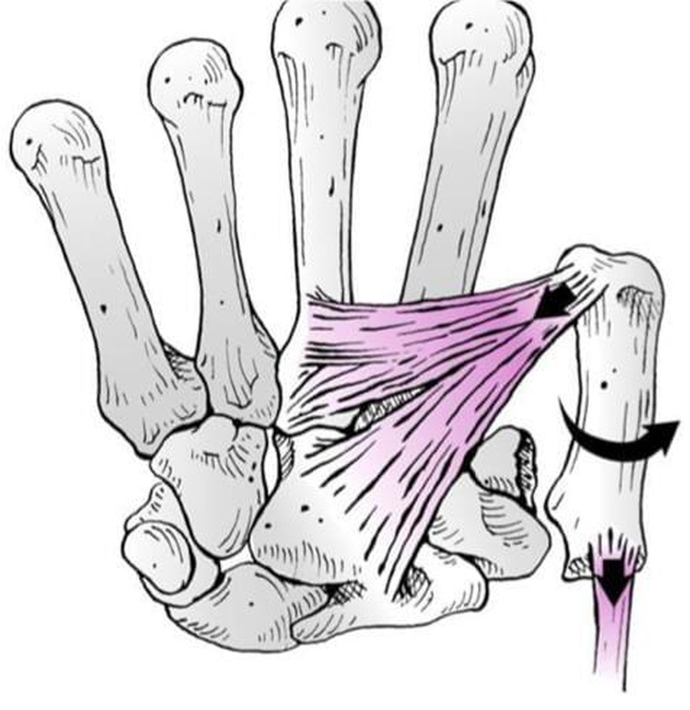

Um pedaço fica. O resto é levado.

Na fratura de BENNETT, um dos músculos responsáveis pelo deslocamento proximal, radial e dorsal da diáfise do metacarpo é o
Quem é o sequestrador?A revelação no próximo story.
Abdutor longo do polegar
Preso na base do metacarpo, puxa a diáfise para cima (seta de baixo).
Aduz e supina o polegar (seta curva).
Fica preso ao trapézio pelo ligamento oblíquo anterior.
Abdutor curto: trocar longo por curto é a pegadinha.
Rockwood and Green's Fractures in Adults, 10ª ed., cap. 45 · Green's Operative Hand Surgery, 7ª ed., cap. 7, p. 272
A questão comentada, e muitas outras, no siteortoquestoes.com.br